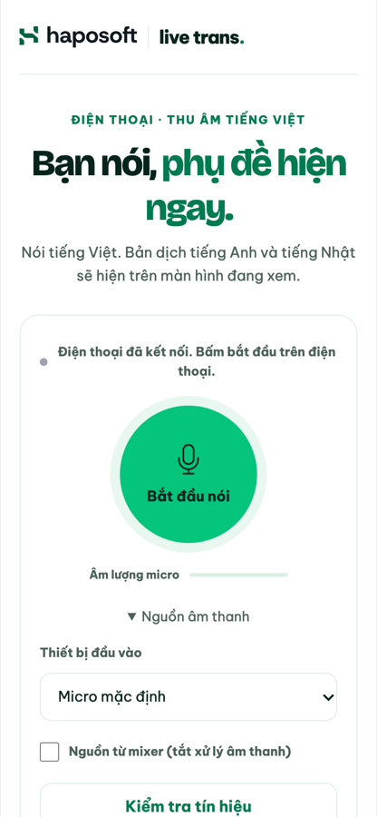
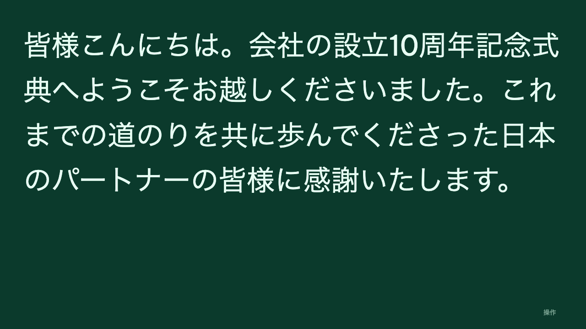

Bắt đầu trong 3 bước
Một điện thoại làm micro. Một màn hình để mọi người theo dõi.
Tải app cho điện thoại
Mở trang Release, chọn bản mới nhất và xem mục Assets.
Android: tải file .apk trong bản mới nhất, mở file và cho phép cài từ nguồn này nếu điện thoại hỏi.
iPhone: quét QR bằng Camera để dùng micro trên Safari, không cần cài app.
Bản iOS dành cho người biết cài IPA
Trong mục Assets, file -unsigned.ipa là bản iOS chưa ký. Cần ký trước khi cài, không cài trực tiếp như APK.
Tạo phiên trên máy tính
Mở trang chính và chọn Tạo phiên mới. Nếu đã có phiên, nhập mã 6 số để vào xem.

Chọn Tạo phiên mới trên máy tính. Kết nối điện thoại
Mở app Live Trans, quét QR hoặc nhập mã phiên. Chọn Bắt đầu và cho phép dùng micro. Nếu không cài app, quét QR bằng Camera để mở micro trên trình duyệt.

Ảnh minh họa. Hãy quét QR hoặc nhập mã trong phiên của bạn. Mở hai màn hình phụ đề
Khi điện thoại kết nối, mở riêng cửa sổ English và 日本語. Kéo mỗi cửa sổ sang một màn hình bên sân khấu, rồi mở Controls / 操作 ở góc dưới để bật toàn màn hình. Nếu trình duyệt chặn cửa sổ mới, cho phép cửa sổ bật lên hoặc mở liên kết trong tab mới. Nói tiếng Việt, ngắt nhẹ giữa các câu; phụ đề tự cập nhật và cuộn xuống.

Mở từng cửa sổ và đặt vào màn hình tương ứng.
Các cách kết nối điện thoại
Mỗi phiên có một mã QR và một mã 6 số trên trang chính. Chọn cách phù hợp với thiết bị đang cầm micro.
| Cách | Làm thế nào | Phù hợp khi |
|---|---|---|
| App · quét QR | Mở app Live Trans, chọn quét QR và hướng camera vào mã trên màn hình. | Điện thoại Android đã cài app. |
| App · nhập mã | Nhập mã 6 số đang hiện trên màn hình, ví dụ 123 456. | Không quét được QR, hoặc màn hình ở xa. |
| Liên kết micro | Trên trang chính chọn Sao chép liên kết micro, gửi qua chat rồi mở trên điện thoại. | Người cầm micro ở chỗ khác. |
| Trình duyệt | Quét QR bằng app Camera, trang micro mở trên Safari hoặc Chrome. Cho phép dùng micro khi được hỏi. | iPhone, hoặc không muốn cài app. |
| Laptop + mixer | Mở liên kết micro trên laptop có card âm thanh USB nối từ bàn mixer. Xem phần bên dưới. | Hội trường có hệ thống âm thanh. |
Khi kết nối thành công, trang chính chuyển sang Màn hình trình chiếu và hiện nhãn trạng thái cạnh tiêu đề:
- Điện thoại đã kết nối. Bấm bắt đầu trên điện thoại. Điện thoại đã vào phiên, chưa thu.
- Đang nghe tiếng Việt (chấm xanh nhấp nháy). Micro đang thu, phụ đề sẽ xuất hiện.
- Đã dừng · Sẵn sàng khi bạn muốn. Người nói đã bấm dừng; bấm lại để tiếp tục.
- Mất kết nối. Điện thoại hoặc mạng bị ngắt; trang chính hiện lại QR để kết nối lại.
Trang micro cần mở qua HTTPS. Giữ trang và màn hình điện thoại mở khi nói: nếu khóa màn hình hoặc chuyển ứng dụng, micro sẽ dừng.
Lấy tiếng từ bàn mixer
Ở hội trường có hệ thống âm thanh, lấy tiếng trực tiếp từ mixer cho phụ đề chính xác hơn hẳn đặt điện thoại giữa phòng.
- Xin đội âm thanh một đường AUX chỉ có micro người nói, không có nhạc nền.
- Nối AUX vào card âm thanh USB, cắm card vào laptop.
- Trên laptop, mở liên kết micro bằng Chrome, mở mục Nguồn âm thanh.
- Chọn card USB ở Thiết bị đầu vào và bật Nguồn từ mixer để tắt lọc vọng, lọc ồn và tự chỉnh âm lượng.
- Bấm Kiểm tra tín hiệu: thanh âm lượng phải chạy khi người nói thử. Bước này chưa gửi gì lên máy chủ.
Nếu hiện Tín hiệu quá mức, giảm mức AUX trên mixer. Nếu hiện Tín hiệu quá nhỏ hoặc không có sau 3 giây, kiểm tra dây, kênh và mức AUX. Lựa chọn thiết bị được nhớ trên trình duyệt đó.

Kết quả thực tế
Thử nghiệm ngày 05/10/2026 với dịch vụ nhận giọng nói mặc định (Gemini). Đoạn nói mẫu khoảng 13 giây do giọng đọc tiếng Việt của máy tính đọc, gửi vào phiên đúng như một điện thoại.
| Lời nói | Xin chào quý vị và các bạn. Chào mừng mọi người đến với buổi kỷ niệm 10 năm thành lập công ty. Xin cảm ơn các đối tác đến từ Nhật Bản đã đồng hành cùng chúng tôi trong suốt chặng đường vừa qua. |
|---|---|
| English | Hello everyone. Welcome to the company's 10th anniversary celebration. Thank you to our partners from Japan for accompanying us throughout the past journey. |
| 日本語 | 皆様こんにちは。会社の設立10周年記念式典へようこそお越しくださいました。これまでの道のりを共に歩んでくださった日本のパートナーの皆様に感謝いたします。 |

Lưu ý về độ chính xác
- Tên riêng dễ bị nghe sai. Trong cùng thử nghiệm, “Haposoft” được nhận thành “Hatsusut” và “HARPO shop”, và bản dịch giữ nguyên tên sai. Với lời phát biểu quan trọng, MC nên nói rõ tên riêng hoặc chuẩn bị sẵn câu dẫn.
- Nói thành câu, ngắt nhẹ giữa các câu. Phụ đề dịch theo câu hoàn chỉnh; câu dài không ngắt sẽ hiện chậm hơn.
- Micro gần người nói, không lẫn nhạc. Tiếng vang và nhạc nền làm giảm độ chính xác rõ rệt.
- Dịch vụ nhận giọng nói. Đổi trong Cài đặt. Trong thử nghiệm này Gemini nhận đủ cả đoạn; Deepgram nhận nhanh hơn nhưng bỏ sót một số từ.
Khi gặp sự cố
| Thông báo | Cách xử lý |
|---|---|
| Chưa được phép dùng micro… | Mở cài đặt trang trong trình duyệt, cho phép Micro rồi bấm bắt đầu lại. |
| Thiết bị âm thanh đang bị ứng dụng khác dùng… | Đóng ứng dụng đang giữ card âm thanh (phần mềm ghi âm, họp trực tuyến) rồi thử lại. |
| Không thấy thiết bị đã chọn, đang dùng micro mặc định. | Card USB bị rút hoặc đổi cổng. Cắm lại rồi chọn lại trong Nguồn âm thanh. |
| Mạng không theo kịp âm thanh… | Mạng yếu. Dùng mạng ổn định hơn (dây LAN, 4G/5G riêng) rồi bắt đầu lại. |
| Mất kết nối | Trên trang chính quét lại QR; trong cửa sổ phụ đề mở Controls và chọn kết nối lại. |
| Cửa sổ phụ đề không mở | Trình duyệt chặn cửa sổ bật lên. Cho phép cửa sổ bật lên cho trang này, hoặc mở liên kết trong tab mới. |
Khi đang sử dụng
Mỗi cửa sổ hiển thị một ngôn ngữ, nền xanh rêu và chữ sáng căn trái. Nhấn Esc để thoát toàn màn hình; có thể cuộn lại để đọc tối đa 30 câu gần nhất.
Chọn Dừng trên điện thoại để tạm ngừng thu. Trên trang chính, mở Điều khiển phiên: Rời phiên chỉ rời trên máy này; Kết thúc phiên cho mọi người ngắt micro và xóa lịch sử sau khi xác nhận.
Nếu điện thoại ngắt kết nối, trang chính hiện lại QR. Nếu cửa sổ phụ đề mất kết nối máy chủ, chọn kết nối lại trong cửa sổ đó. Kiểm tra mạng và quyền micro khi cần. Điện thoại dùng trình duyệt cần mở trang qua HTTPS.